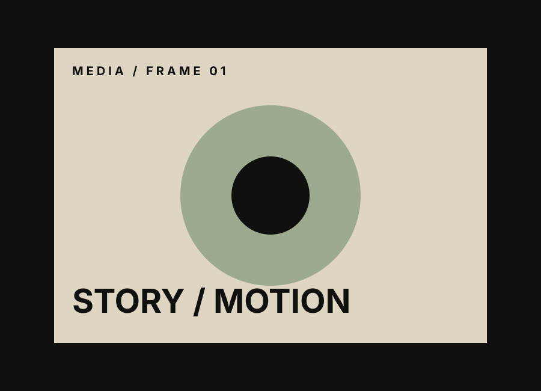
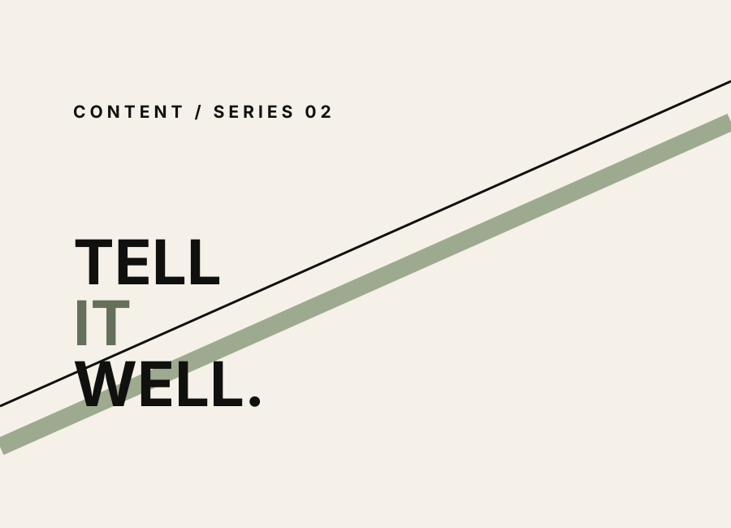
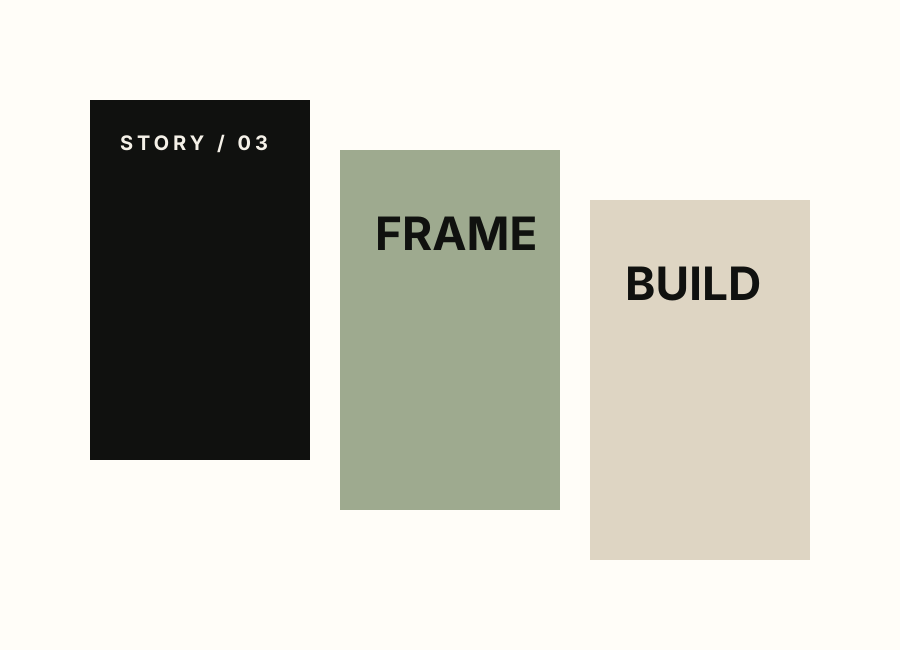

Dark Narrative Series
Cinematic storytelling experiments built for digital audiences.
A media world for visual storytelling, creator-focused content, video concepts and experimental formats.

Cinematic storytelling experiments built for digital audiences.

Short-form motion language for a future SPRFOLIO world.

Repeatable visual formats for modern social publishing.

Image, type and sound explorations.

Original media ideas ready for future development.

Experiments across YouTube, Instagram, Vimeo and beyond.